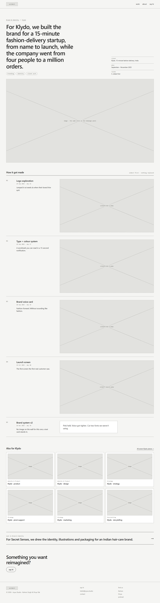
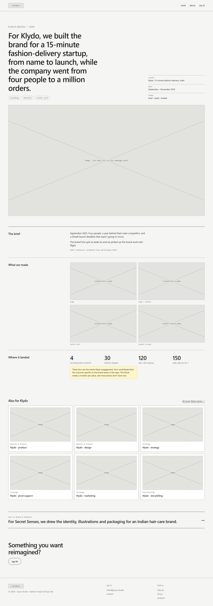
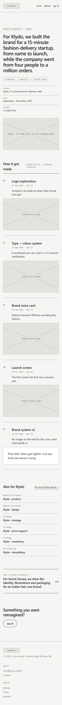
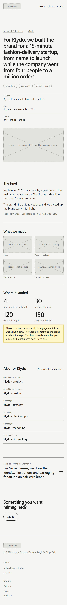

Study 04 · 1 October 2026
The piece page
Where every homepage panel lands: 27 of these, one per piece of client work. One decision here: how a piece is told. Two versions, built with the same real content (Klydo · branding, from the 120-day wall in work/klydo-cut-design.html), identical everywhere except that one part.
What both versions share, and where each part leads
| Part | What it is | Leads to | Why |
|---|---|---|---|
| Crumb | Brand & Identity / Klydo | Work index filtered to the pill · Client page | The two ways up: the kind of work, and the client. The pill doesn't navigate on the homepage (Study 03); here it can. |
| Headline | The homepage sentence, word for word. | — | The click lands on what was clicked. A visitor who tapped "For Klydo, we built the brand…" reads the same line arriving. |
| Tags | The panel's tags, now links. | Work index filtered by tag | On the homepage they were text inside the panel link (Study 03). Here they're free to be the fine axis: every piece tagged identity. |
| Facts | Client (linked), when, and one line on the body's shape. | Client page | Answers "who, when" before the body, so the body can be about the work. |
| Hero image | The same still as the homepage panel. | — | Continuity again: the picture they clicked is the picture they get. |
| Body | The decision. See below. | ||
| Also for Klydo | The other six Klydo pieces, each with its own pill, plus "All seven Klydo pieces →". | Six piece pages · Client page | Klydo is seven pieces across four pills. Someone who liked the brand may want the strategy. On a phone these become text rows (below). |
| Next | The next piece in the same pill, with its homepage sentence. | Piece page | The homepage's rotation, continued by hand: Klydo · branding is followed by Secret Senses, as it is on the homepage. |
| Closing | "Something you want reimagined?" + say hi. | Say hi | Picks up the homepage's verb. Placeholder copy; it's Kahran's and Divya's to write. |
The decision: how a piece is told
A · Rounds
Five dated rounds, oldest first, each an image and a short title; nothing replaced. Open A

B · Case study
Three labelled rows: the brief, what we made, where it landed. Open B

Where A comes from
Divya's "historical layers" (Study 01), after the Everything Bazaar board site: every round is a numbered entry, oldest to newest, an image and a short title with its date, and a new round never replaces an old one. A brings that to a piece of client work. The Klydo wall already holds exactly this material: each artifact has a day, a date, a title, a one-line caption and, for four of the five brand artifacts, an image.
No screenshot of Everything Bazaar here on purpose: that site is local-only by Divya's instruction, and this repo is public.
What each one costs
| A · Rounds | B · Case study | |
|---|---|---|
| Needs, per piece | Dated artifacts with a one-line caption each. | A brief, a set of deliverables, and an outcome specific to the piece. |
| For Klydo · branding | have 5 dated artifacts on the wall, 4 with images. | have brief + deliverables. missing outcome: the only numbers (4 / 30 / 120 / 150) are the whole engagement, so B has to borrow them. The yellow flag on B shows where. |
| Fails how | A piece with one finished deliverable becomes a one-round page. | A piece with no number gets a "where it landed" with nothing in it, or a borrowed one. |
| Reads as | How the work moved. Joyus as a studio that thinks in rounds. | What was delivered. Joyus as a vendor with outputs: the thing the July positioning warns against. |
Recommendation: A. It's Divya's idea, the Klydo material already has its shape, and it doesn't need an outcome number most pieces don't have. B's weak row is visible in its own wireframe. Not yet known: how many of the other 26 pieces have dated material. That's a content audit, and it's the thing that could overturn this.
On a phone


Rounds stack: number and title, then the image full width. Both pages measured at 390 px wide: page width 390, no element past the edge.
Found on the way
The source contradicts itself. On the wall, "Logo exploration" is day 15, week three, and its caption says "Jumped in at week six when their brand hire quit". work/klydo.html also says week six. Kept exactly as written (it's Kahran's copy); either the day or the week is wrong, and only Kahran knows which.
Six image cards made the phone page 1,250 px longer. "Also for Klydo" stacked six 16:9 cards at 390 px. Now text rows on phones: A went from 5,626 to 4,372 px tall.
A false alarm, measured rather than eyeballed. The downscaled phone screenshot looked like it clipped "say hi" in the nav. The screenshot script now measures page width against screen width and lists any element past the edge: nothing was.
What every piece page needs
- The homepage sentence and tags (already drafted for all 37, Study 02).
- One hero still, the same one the homepage panel shows.
- Its rounds: dated artifacts, one-line caption each, an image where one exists.
- Its date range.
The test
node studies/iterations/04/check.cjs, run by verify.cjs. For both versions: every link names a Study 03 page type; the nav and footer match round 4; the headline is the homepage sentence word for word; every homepage tag is a link to its filter; the pill links to its filter; the siblings are exactly the other six Klydo pieces under their own pills; "next" is the next piece in the pill in homepage order. Then: A and B are identical outside the body (so the comparison is fair), and every round's date agrees with its day number counted from day 1 = 10 Sep 2025.
Broken on purpose to prove it bites: a sibling under the wrong pill and a round dated 20 Oct instead of 19 Oct. Three failures (the third: A no longer matched B outside the body). Restored, passes.